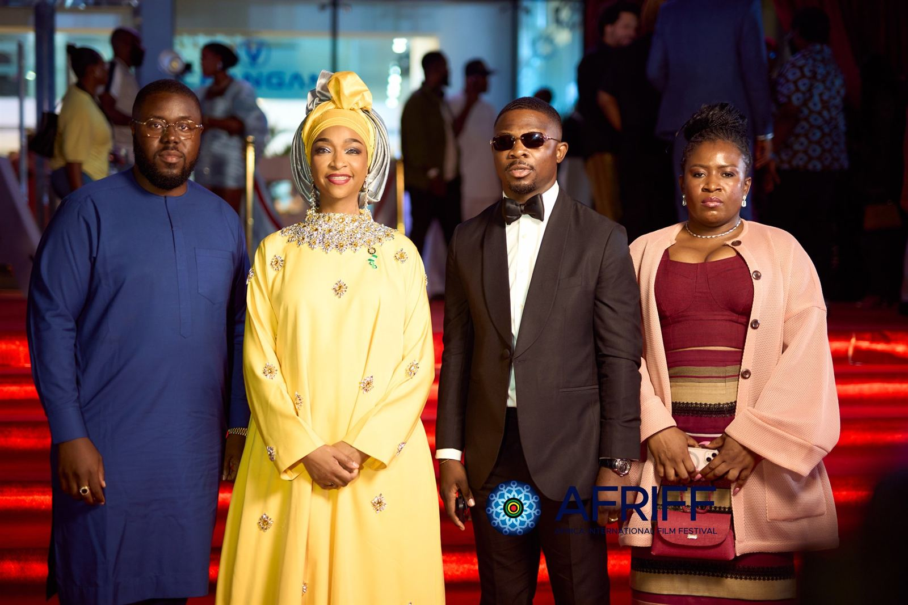

Festivals · Film
Africa International Film Festival (AFRIFF)
- Dates
- Dates TBA
- Venue
- Lagos (multi-venue; AFCM last at Twinwaters, Lekki)
- Location
- Lagos, Nigeria
- Format
- In-person
- Category
- Film
- Industry
- Film festival
- Organiser
- Africa International Film Festival
- Official website
- https://afriff.com/
About
Official site (fetched 24 Nov 2026) still presents AFRIFF 15 in Lagos, 1–7 November 2026, including AFCM 2–5 November at Twinwaters, Lekki. That edition is past. No official 2027 dates published. Recurring official festival described on the site as West Africa's biggest film festival. Nigeria dates are local (West Africa Time, WAT, Africa/Lagos, UTC+1, no daylight saving).
Topics: African cinema, film market, screenings, industry programme.
No organiser attendance figure found on the official pages checked (24 Nov 2026). Ranked by an estimated size tier 'medium' (our judgement from format, venue and scale, not an official number).
Sources
- Official — https://afriff.com/